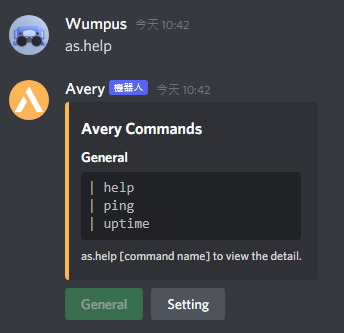
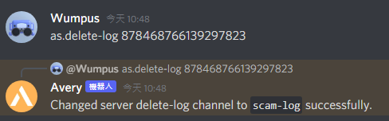
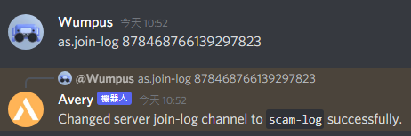
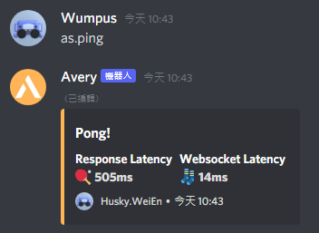
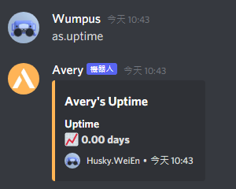

Bot
as.help
Method : as.help
Function : Show the commands.
Example : as.help
(If you press the button "general" and "setting". You can switch to see the general commands and setting commands.)
as.prefix
Method : as.prefix { your prefix }
Function : Customize your prefix.
Example #1 : as.prefix . (Set prefix to ".")
Example #2 : as.prefix ! (Set prefix to "!")
Log
as.suppressed-log
Method : as.suppressed-log { ID of the Channel which you are going to set to be suppressed log }
Function : Set a channel to be the "suppressed log". Suppressed log will show those messages that detected to be suspicious message.
(Also show the person who sent those messages.)

as.delete-log
Method : as.delete-log { ID of the Channel which you are going to set to be suppressed log }
Function : Set a channel to be the "delete log". Delete log will show those messages that have been deleted.
(Also show the person who sent those messages.)
as.edit-log
Method : as.edit-log { ID of the Channel which you are going to set to be edit log }
Function : Set a channel to be the "edit log". Edit log will show those messages that have been edited (Including the message before edit and after edit).
(Also show the person who sent those messages.)

as.join-log
Method : as.join-log { ID of the Channel which you are going to set to be join log }
Function : Set a channel to be the "join log". Join log will show the people who join your server.
(Also show how long their accounts have been created and the day the accounts created.)
as.leave-log
Method : as.leave-log { ID of the Channel which you are going to set to be leave log }
Function : Set a channel to be the "leave log". Leave log will show the people who leave your server.
(Also show how long they have join your server and since what day.)
Others
as.ping
Method : as.ping
Function : Show your ping.
Example : as.ping
as.uptime
Method : as.uptime
Function : Show how long Avery has been release.
Example : as.uptime
